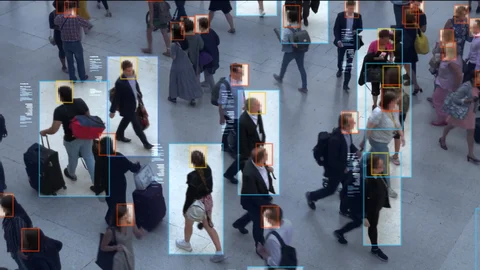

Este projeto simula um sistema de segurança inteligente utilizando conceitos de Inteligência Artificial. O sistema é composto por quatro câmeras de monitoramento, sendo três responsáveis pela captura de imagens em tempo real e uma dedicada à análise de reconhecimento facial.
Através da simulação, é possível visualizar o funcionamento de um sistema moderno de vigilância, onde a IA identifica padrões, detecta movimentos e analisa rostos, auxiliando na segurança do ambiente monitorado.
Este site foi desenvolvido utilizando HTML e CSS, com o objetivo de demonstrar a estrutura visual e funcional de um sistema de monitoramento inteligente.
Status: Online
Status: Online

Status: Online
Detectando rosto...